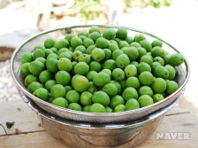
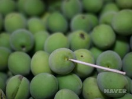
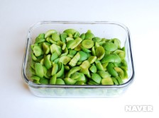
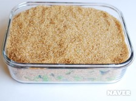

장애인차별금지법에 의한 관리구제 절차
- 진정접수
- 국가인권위원회 조사
- 국가인권위원회 결정
- 시정권고
- 진정인, 피진정인, 법무부 장관에 전달
- 법무부 장관
- 시정명령
- 불이행시 과태료부과
매실장아찌 만드는 법
요리법
요리과정
-  매실은 옅은 식촛물에 담가 흔들어 씻은 후 흐르는 물에 깨끗이 씻는다. 체에 밭쳐 물기를 완전히 제거한다.
-  매실의 꼭지를 이쑤시개로 제거한다.
-  매실은 반을 갈라 씨를 빼고 과육만 준비한다.
-  저장용기에 설탕과 매실을 켜켜이 올리고 위에 설탕으로 매실이 보이지 않도록 덮는다. 밀봉하여 저장한다.
멜론 음원 차트 2021.06.17 12:00
- Butter
방탄소년단
- Next Level
aespa
- 헤픈 우연
헤이즈 (Heize)
- Dun Dun Dance
오마이걸 (OH MY GIRL)
- Peaches (Feat. Daniel Caesar & Giveon)
Justin Bieber
- 롤린 (Rollin')
브레이브걸스
- 라일락
아이유
- ASAP
STAYC(스테이씨)
- Celebrity
아이유
- 운전만해 (We Ride)
브레이브걸스